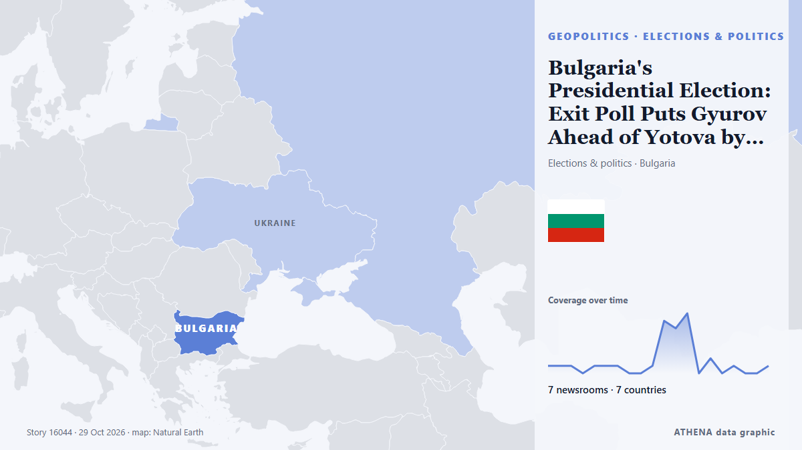

Bulgaria's Presidential Election: Exit Poll Puts Gyurov Ahead of Yotova by 0.8%

Bulgaria’s presidential election is heading for a runoff between Iliana Yotova and Andrey Gyurov on November 1, with completed parallel vote counts showing a narrow race and turnout of about 22%… από Novinite
Αναφέρθηκε ανεξάρτητα από 7 μέσα σε 7 χώρες από τις 20 Οκτ, πρώτο από το Novinite· η κάλυψη εξασθενεί. Το ATHENA εκτιμά τον κίνδυνο μέτριο (3.9/10), κυρίως λόγω της σοβαρότητας της βλάβης που περιγράφεται και της ποιότητας της τεκμηρίωσης. Η βεβαιότητα είναι 89% (υψηλή), καθώς το επιβεβαιώνουν 7 ανεξάρτητα μέσα με μέση αξιοπιστία πηγών 80%. Ποιοι το ανέφεραν: 23 μέσα στη χώρα Βουλγαρία · Bulgaria, 4 μέσα στη χώρα Τουρκία · Turkey, 1 μέσα στη χώρα Ηνωμένες Πολιτείες · United States. Η κάλυψη διήρκεσε από 20 Οκτ έως 29 Οκτ, 228 ώρες.
Γιατί έχει σημασία: Οι εξελίξεις στην ασφάλεια και τη διπλωματία μπορούν να μετατοπίσουν συμμαχίες, εμπόριο και αγορές πολύ πέρα από τις χώρες που εμπλέκονται.
Τι άλλαξε: 1 νέα αναφορά στο 24ωρο έως 29 Οκτ.
Οι τίτλοι των ειδήσεων παρουσιάζονται στα αγγλικά, όπως δημοσιεύτηκαν.
Με μια ματιά
Επιλέγεται, βαθμολογείται και γράφεται από τη δημοσιευμένη μεθοδολογία του ATHENA. Κανένας συντάκτης δεν παρεμβαίνει σε μεμονωμένα γεγονότα. Πώς παράγεται ›
| 20 Oct 09:08 UTC | 1 |
|---|---|
| 20 Oct 21:08 UTC | 1 |
| 21 Oct 09:08 UTC | 1 |
| 21 Oct 21:08 UTC | 0 |
| 22 Oct 09:08 UTC | 1 |
| 22 Oct 21:08 UTC | 1 |
| 23 Oct 09:08 UTC | 1 |
| 23 Oct 21:08 UTC | 0 |
| 24 Oct 09:08 UTC | 0 |
| 24 Oct 21:08 UTC | 1 |
| 25 Oct 09:08 UTC | 7 |
| 25 Oct 21:08 UTC | 6 |
| 26 Oct 09:08 UTC | 8 |
| 26 Oct 21:08 UTC | 0 |
| 27 Oct 09:08 UTC | 2 |
| 27 Oct 21:08 UTC | 0 |
| 28 Oct 09:08 UTC | 1 |
| 28 Oct 21:08 UTC | 0 |
| 29 Oct 09:08 UTC | 0 |
| 29 Oct 21:08 UTC | 1 |
| 22 Oct 07:16 UTC | 0.0 |
|---|---|
| 25 Oct 06:38 UTC | 0.6 |
| 26 Oct 10:01 UTC | 1.3 |
| 26 Oct 22:01 UTC | 3.7 |
| 29 Oct 21:37 UTC | 3.9 |
Γιατί αυτοί οι αριθμοί
Σημασία
Κίνδυνος
Βεβαιότητα
Η κάλυψη — ποιος το ανέφερε και πότε
ο τίτλος όπως δημοσιεύτηκε · ανοίγει το πρωτότυπο- Novinite · Βουλγαρία · BulgariaPoll: Yotova Leads Gyurov in Bulgaria’s Presidential Race
- Novinite · Βουλγαρία · BulgariaPoll: Yotova at 47.3%, Gyurov at 30.6%, Kostadinov with 10.3% in Presidential Race
- Novinite · Βουλγαρία · BulgariaBulgaria Presidential Vote: 6.59 Million Eligible, Voter Turnout Stands at 38.1%
- Novinite · Βουλγαρία · BulgariaPoll: Yotova Leads Gyurov by 14.5 Points in Bulgaria's Presidential Race
- Novinite · Βουλγαρία · BulgariaTwo Polls Show Yotova in Front, but Gap with Gyurov Narrows
- Novinite · Βουλγαρία · BulgariaPoll: Yotova Leads Gyurov by 13.5 Points
- Anadolu Agency (English) · Τουρκία · TurkeyBulgaria heads to polls for presidential election amid regional security concerns
- Novinite · Βουλγαρία · BulgariaBulgaria Presidential Election Exit Poll: Yotova and Valchev Lead, Face Gyurov and Kandev in Runoff
- Anadolu Agency (English) · Τουρκία · TurkeyIliana Yotova takes lead in Bulgaria's presidential election, exit polls show
- Novinite · Βουλγαρία · BulgariaLow Turnout and Close Race Set Up Bulgaria's Presidential Runoff
- Novinite · Βουλγαρία · BulgariaExit Poll: 39% of GERB Voters Back Gyurov for President of Bulgaria
- Novinite · Βουλγαρία · BulgariaBulgaria's Presidential Election: Exit Poll Puts Gyurov Ahead of Yotova by 0.8%
- PBS NewsHour · Ηνωμένες Πολιτείες · United StatesPresidential race in Bulgaria heads to runoff due to record low turnout
- Novinite · Βουλγαρία · BulgariaYotova Calls for "Peace", Gyurov Invites Her to Presidential Debate
- Al Jazeera English · Κατάρ · QatarBulgaria election heads to a run-off amid low voter turnout
- Anadolu Agency (English) · Τουρκία · TurkeyBulgaria's presidential election heads to Nov. 1 runoff
- Korea Herald · Νότια Κορέα · South KoreaPresidential race in Bulgaria heads to runoff due to record low turnout
- Novinite · Βουλγαρία · Bulgaria95% of Votes Counted: Yotova Leads Gyurov by 2.56 Points in Bulgaria’s Presidential Vote
- Novinite · Βουλγαρία · BulgariaGyurov Challenges Yotova to Debate as Both Candidates Seek Runoff Backing
- Free Malaysia Today · Μαλαισία · MalaysiaBulgaria heads to presidential runoff after close vote
- Novinite · Βουλγαρία · BulgariaRadev Says Bulgaria’s Presidential Runoff Will be a Choice Between Peace and War
- Novinite · Βουλγαρία · BulgariaBulgaria's Presidential Election: Gyurov Wins the Overseas Vote, Yotova Ranks Second
- Kyiv Post · Ουκρανία · UkraineBulgarian Presidential Election Exposes Split Over Ukraine War
- Novinite · Βουλγαρία · BulgariaTrend: Gyurov Wins Young Voters, Yotova Dominates Among Over-70s
- Novinite · Βουλγαρία · BulgariaGyurov Sweeps Sofia and Most of Europe as Yotova Dominates Bulgaria's Provinces
- Novinite · Βουλγαρία · BulgariaGyurov Files Complaint Accusing Radev of Using Government Resources to Campaign for Yotova
- Anadolu Agency (English) · Τουρκία · TurkeyBulgaria’s President Yotova leads 1st-round vote, heads to runoff
- Novinite · Βουλγαρία · BulgariaOfficial Final Count: Yotova Wins 34.76%, Gyurov 31.95% - Both Advance to Bulgaria's Presidential Runoff
- Novinite · Βουλγαρία · BulgariaBulgarian MP Challenges Yotova Over Support From Revival, AfD’s European Parliament Ally
- Novinite · Βουλγαρία · BulgariaHow a 20-Point Lead Became 2.8: Reading Bulgaria’s Presidential First Round
- Novinite · Βουλγαρία · BulgariaYotova and Gyurov to Face Off on National Television Ahead of the Runoff on Sunday
- Novinite · Βουλγαρία · BulgariaA Tired Debate, a Clear Divide: Why Sunday’s Runoff Is About Bulgaria’s Place in Europe